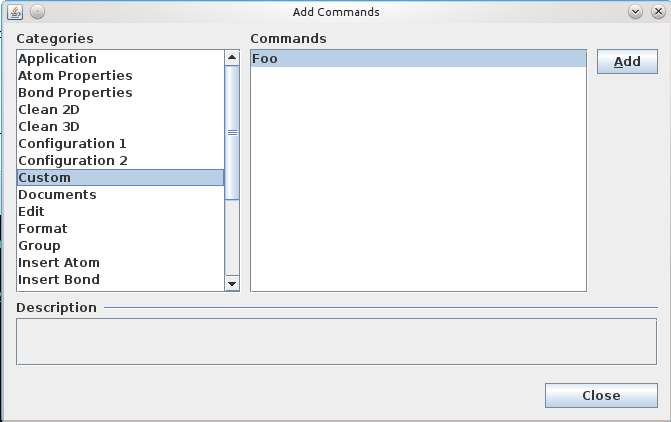

First of all, define the new action for the chemaxon.marvin.beans.MSketchPane component that you would like to integrate into your custom application. Your action has to be an extension of the javax.swing.AbstractAction class. In the below example, the new action is titled as Foo.
private final Action newFooAction = new AbstractAction("Foo") {
public void actionPerformed(ActionEvent ev) {
System.err.println(ev);
}
};
An Action that has a non-null value for Action.SELECTED_KEY property is displayed in different ways in the menu,
depending on the value of the "Radio" property. If the "Radio" is set to Boolean.TRUE it will be displayed as a
JRadioButtonMenuItem otherwise
as a JCheckBoxMenuItem. This property doesn't
affect the Action's behavior in toolbars. It will be always displayed as a JToggleButton there.
For examples see the code of the "newToggleAction" and "newRadioAction" actions in the attached source code.
After that, add the new action to the action map of the sketcher
msketchPane.getActionMap().put("foo", newFooAction);
To be able to access it in the Customize... dialog, set the useComponentActions parameter to true.
msketchPane.setParams("useComponentActions=true\n");
To test this functionality, run you custom application, open View/Customize menu, push the Add... button. The Custom entry appears among Categories. Under this category, you will see Foo in the Commands list.
Thus, you can insert this command manually into the running application to the desired place. For example, you can insert the Foo action into the Atom popup menu. But this modification is not preserved for the next time.
To add the new action permanently, define a menu configuration xml for you application. See the linking documentation how to export a configuration file: Configurations of MarvinSketch.
In our example, the new action appears in the menu config file like this:<add path="popup/atom"> <item id="foo"/> </add>
The full xml file can be download from here: foo.xml.
If the config xml is ready, place into the codebase of your application. The codebase is the same directory where the main jar of your application is located.
Modify the initalization of the sketcher component. Create a UserSettings object and specify the location of the xml file in the menuconfig parameter then give it for MSketchPane.
UserSettings settings = new UserSettings();
settings.setProperty("menuconfig","foo.xml");
MSketchPane msketchPane = new MSketchPane(settings);
The full java code is available here: NewActionInSketch.java